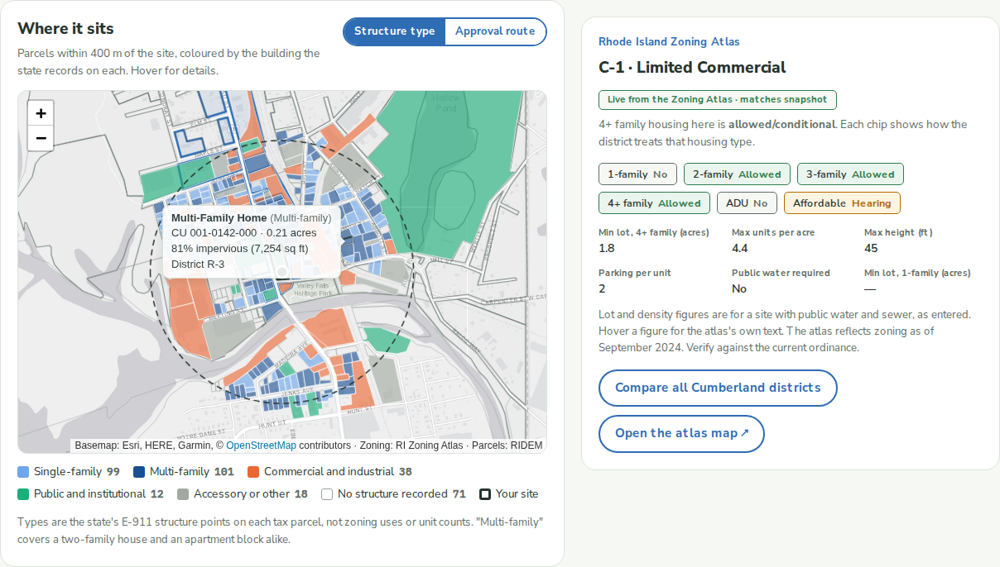
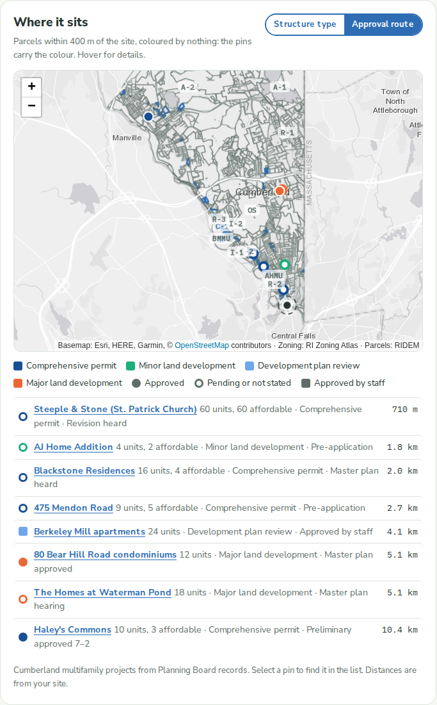

Zoning map on the Check page
Built from docs/plans/check-map.md with Maqz's three choices: (1) Leaflet with a street basemap, (2) structure type as the default colouring, (3) 400 m. Branch check-map, one commit on top of dev. Not merged into dev, not pushed. It typechecks, next build passes (13 static pages), and a headless browser run shows no console errors.

What was built
A map called "Where it sits" in the "What the zoning allows here" section, beside the existing Atlas panel. On a phone it stacks above that panel. Nothing loads, Leaflet included, until the section is within 300 px of the screen.
| Layer | Source | Shown | Hover |
|---|---|---|---|
| Zoning districts | RI Zoning Atlas layer 14, live, cached per town | All the town's districts, with code labels. The project's district is tinted. | Code, name, how it treats the project's housing type |
| Parcels within 400 m | RIDEM tax parcels, live, paged up to 6,000 | Filled by six structure classes. Legend shows counts. | State's structure description (class), plat/lot, acres, impervious % and sq ft, district |
| The site | Address lookup point, now saved in the project and share link | Marker, dashed 400 m circle, its parcel outlined | Address, plat/lot |
| Recent projects | history.ts, 8 Cumberland projects, now with positions | Second mode ("Approval route"): parcels turn grey, pins coloured by route, shaped by status, plus a list sorted by distance | Name, units, route, status, distance from the site |

Decisions
Where the build differs from the plan
- Basemap: Esri World Light Gray, not CARTO. Every CARTO keyless style (light, voyager, with and without labels) now returns an "API KEY REQUIRED" tile. Esri's light grey canvas answers without a key. Its street names are drawn into the base and show through the gaps between parcels, because roads aren't parcels. Its place-name layer sits above the fills.
- Only the site's point is saved, not its outline. The site's parcel is found among the parcels already fetched: by plat/lot when the form has one in RIDEM's format, otherwise the parcel containing the point. Share links stay short, and the outline is always current.
- Hover shows impervious cover, not "% developed". RIDEM's
PctDevmixes scales: some parcels read 100 and others 0.145 for the same kind of lot.PctImp(0–1) matchesIMP_sqftdivided by area, so that is the figure shown. - Pins select a list row instead of opening popups. The GitHub Pages workflow injects a base path at build time, and a link inside Leaflet's raw HTML would ignore it. The list uses Next's
Link, so links to/records#p-…survive the base path. Precedent table rows now carry those anchors. - SVG rendering, not canvas. Leaflet 1.9.4's canvas renderer threw
clearRecterrors. React's development double mount removes the first map in the same frame its shapes were added, and that map's pending redraw then runs against a destroyed canvas. Even the densest test site drew comfortably as SVG.
Other choices
- "Structure type as default" became a two-way switch: structure type (default) and approval route. The two colourings never share the screen, so they can reuse one validated palette.
- Six classes from 36 E-911 codes. Mobile, bungalow and seasonal homes count as single-family. "Other residential" counts as multi-family, as the plan said. Industrial, lodging, airports and campgrounds count as commercial. All P-codes count as public. Everything else is "accessory or other", and blank is "no structure recorded".
- Colours were validated, not eyeballed. The four hues are light blue (single-family), dark blue (multi-family), orange (commercial) and aqua (public). They pass the dataviz validator for every pair against the page background, including color-blind separation of at least 9.2. One hue at two lightnesses carries the residential split, so single- and multi-family read as related. Three hues sit below 3:1 contrast, so every class is also named in the legend (with counts) and in each hover card.
- Pin shape carries status (filled: approved, ring: pending or not stated, square: approved by staff), so colour is never the only signal.
- Where the projects are placed: six by plat/lot (centroid of their parcels), Berkeley Mill by the parcel at its street address, and 80 Bear Hill Road by address point only. Four parcels meet at that point, so its hover says "parcel not confirmed".
- A manual town change clears the saved point, so the map never shows a site in the wrong town. "Reset to the example" clears it too.
- The mouse wheel zooms only after the map is clicked or focused, so scrolling the page never gets caught.
Checked
| Case | Result |
|---|---|
| Example project, no address | All 12 Cumberland districts, R-3 tinted, with a prompt to look up an address |
| Address lookup through the form (45 Broad Street) | Point saved. 339 parcels in about 1 s: 99 single-family, 101 multi-family, 38 commercial, 12 public, 18 other, 71 none. Town Hall parcel outlined. |
| Downtown Providence (Kennedy Plaza) | 798 parcels in under 1 s, not truncated: 427 commercial, 259 multi-family, 0 single-family |
| Phone width (390 px) | Map stacks above the Atlas panel at 360 px tall. Legend wraps. |
| Approval route mode | 8 pins, list sorted by distance. Selecting a pin highlights its row. |
| Precedent anchors | All 8 id="p-…" rows present on /records |
Found while implementing
- Next.js 16.3.8 has published critical advisories, fixed in 16.4.6: RCE in image optimization with SVG, RCE in
use cache, and DoS via Server Actions. A static Pages export likely uses none of these, but the dev server and any server deploy do.npm auditflagged it when Leaflet was installed. Leaflet itself is clean. - Esri basemap terms. The keyless
services.arcgisonline.comtiles are widely used with attribution, but Esri's terms expect an ArcGIS account for production apps. Before a public launch, either get a free ArcGIS developer key or self-host tiles (for example Protomaps). Swapping is two URLs inZoningMapView.tsx. - The circle crosses town lines, but district outlines don't. Around Cumberland Town Hall, Central Falls parcels (
CF …) are drawn and coloured, but only Cumberland's districts are outlined. Their hover shows no district. - "Access Point for Multiple Buildings" (A9) often marks a condominium or apartment complex's driveway address. It currently counts as "other", which undercounts multi-family around complexes.
- "Multi-family" means 2+ units. Downtown Providence shows 259 multi-family parcels and no unit counts. A two-family house and a 200-unit tower look the same. The legend says so.
- Two pins overlap at town zoom. Waterman Pond and 80 Bear Hill Road are about 150 m apart on Bear Hill Road. Both are in the list, but the map shows one until you zoom in.
- Hover cards can clip at the left edge on phones, where hovering is a tap anyway.
Possible additions
Size: S under a day, M one to three days, L longer or needs data work. Ordered by value to the applicant.
| Addition | Why | Size |
|---|---|---|
| Fill the "by hand" facts from the map: RIDEM wetlands, FEMA flood zones and RIDOT state roads, queried at the site's parcel | The form asks for wetlands and state-road access by hand, and they decide state permits. These are public statewide layers, queried the same way as the parcels. Draw them as optional layers and pre-tick the boxes, marked "from the map, confirm on site". | M |
| Notice radius ring and parcel count | Hearings need mailed notice to owners within a set distance. A second ring at the town's radius, with "about N parcels to notify", gives an early cost and effort figure. Owner names are not in the state layer and would need assessor data. | S |
| Pick the site on the map on trial | Selecting a parcel sets the plat/lot, lot area, district and point, the same as the address lookup. This helps where address matching fails, such as vacant land. Now built under Trial → Zoning map → "In the address step" (branch check-trials): a click looks up the point, and the result is applied with "Use these facts". Reverse geocoding a picked point to a street address is not built. | M |
| Neighbourhood context for the hearing | The records show boards weighing density against "about 15 nearby" (Haley's Commons). Shares by structure type within 400 m, plus multi-family parcel sizes, give the applicant the same comparison to bring. Feed it into Hearing prep. | M |
| Neighbouring towns' districts when the circle crosses a line | Query the Atlas by the circle's bounding box rather than by town. That fixes the missing Central Falls districts in the case above. | S |
| Transit near the site from RIPTA stops and frequent routes | Pre-fills "near frequent transit", which changes parking and density rules under recent state law. RIPTA publishes GTFS. | M |
| Unit counts for existing buildings | Splitting "multi-family" into 2–4 and 5+ units needs assessor data per town (level 2+ in the statewide plan). No statewide source has it. | L |
| Project parcels outlined, and more towns' projects | Six projects already have parcel ids. Outlining them shows each project's footprint. Other towns get pins as their records are read. | S/L |
| Map on the summary page (print and share) | A static snapshot of the 400 m view on /summary, so the printed project carries its context. | S |
| Split "access point for multiple buildings" into its own class, or count it with multi-family | Fixes the undercount around complexes. Check a sample first. | S |
| Spread overlapping pins and show a tap-friendly card on phones | Fixes the two small display issues above. | S |
| Upgrade Next.js to 16.4.6 | Security advisories, above. Separate from the map. | S |
| Basemap key or self-hosted tiles | Terms, above. Only before a public launch. | S |
Files
lib/map.ts: Atlas and parcel queries, structure classes and colours, geometry helperscomponents/ZoningMap.tsx: data, mode switch, legend with counts, project list. Loads the view lazily.components/ZoningMapView.tsx: Leaflet only, client-onlylib/types.ts:lat/lonon the project;at/parcelson precedentslib/data/history.ts: positions andprecedentId.PrecedentTable.tsxuses it for row anchors.AddressLookup.tsxsaves the point, andIntakeForm.tsxclears it on a town change.ProjectWorkspace.tsxplaces the map, andglobals.cssstyles it.package.json:leaflet@1.9.4,@types/leaflet@1.9.20